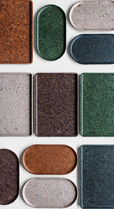

-
INTRODUCTION
Brand
사회적 문제를 해결하기 위해
노력하는 브랜드들


C.F. Moller
The stacking chair has been designed through initial sketches in line with the circular economy, with a seat, back and pipe shoe fashioned from granulated fishing nets mounted on a steel frame.
The major challenge has been to translate sustainability into a new and durable expressive design content. The solution is the visible and self-explanatory interfaces between frame and plastic shell, that both signal and promote reusability of new chairs or other products.
Eco Birdy
ecoBirdy recycles discarded plastic toys and turns them into colourful, kid-sized design furniture that is comfortable to use and easy to clean.
ecoBirdy created a system that starts with the collection of old, unused plastic toys, passes through the recycling phase and ends with the design and production of pieces of furniture. The collection of kids' furniture is entirely made of recycled plastic from European waste. Each step is based on social and environmental responsibility.
Raeburn
Christopher Raeburn has established his eponymous brand with responsible and intelligent fashion design for a global audience. The RÆMADE ethos in particular has pioneered the reworking of surplus fabrics and garments to create distinctive and functional pieces.
Alongside this, a highly collaborative spirit informs luxurious, handcrafted and award-winning products with integrity and purpose. This innovative approach, with an unusual balance of high concept, accessibility and wearability, is applied to menswear, womenswear, luggage and accessories.
- 
Sonite
SONITE is an eco-luxury brand that conveys the value of resource circulation under the slogan "Sustainable Design where nature and humans coexist." Innovative upcycling materials with reduced carbon footprint, Sonite products have added beauty to their practicality by making their unique characteristics stand out and designing without clutter.
All of SONITE's products, which have sublimated the limits of resources to technology and design for sustainability, are deeply embedded in efforts to ensure a sustainable lifestyle.
Emeco
Coca-Cola had a lot of discarded plastic bottles.
They approach us. “Let’s make something people won’t throw away.” Sensible on many fronts. But easy? No.
111 Navy requires 111 rPET Coke bottles, new science and a lot of hard work. But this partnership could rescue tons of scrap plastic from landfills. So...we’re in.

Hicycle
It is a social enterprise that started as a social venture in 2013 and launched an upcycle design brand based on various resources. The resources that have been discarded on a daily basis are developed into upcycling materials We produce design products and strive to spread the consumption culture and sustainable lifestyle with the value of resource circulation
Rens
Fashion is the second-most polluting industry in the world.
Until the day that we can break the laws of physics and make something
from nothing, we must choose progress.
Rens is committed to this journey.
100% recycled upper made from coffee & recycled plastic.
Coffee again

512 cups of coffee per year per adult in Korea.
There is something surprising about the coffee we drink on a daily basis.
When making coffee, only 0.2% of coffee beans are used.
The remaining 99.8% is thrown away in the name of coffee grounds and is not utilized properly. Coffee Again manufactures products with added value that can be used in daily life by upcycling coffee grounds.
2 Hope bike
The two-wheeled Hope Bike was born in 2006.
80% of these workers are homeless people in self-sufficiency training,
The homeless, who have been marginalized by society, are now members of the two-wheeled bicycle of hope, raising the wings of hope to return to being a proud member of society.
2 HOPE BIKE is an upcycle design brand newly launched by Hope Bike in 2015.

Mater
Founded in Copenhagen in 2006, Mater was created to be the pioneering global brand with sustainability embedded in its core. From the very beginning the ambition was to inspire a global design audience and engage people into sustainable thinking. Mater combines sustainability and circular production using waste, with timeless design, through collaboration with an external base of well-established and new design talents.